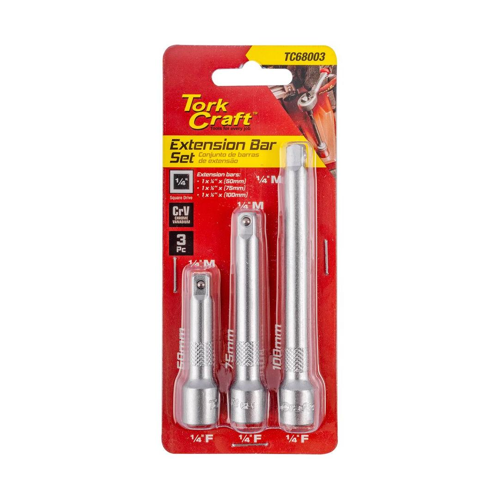
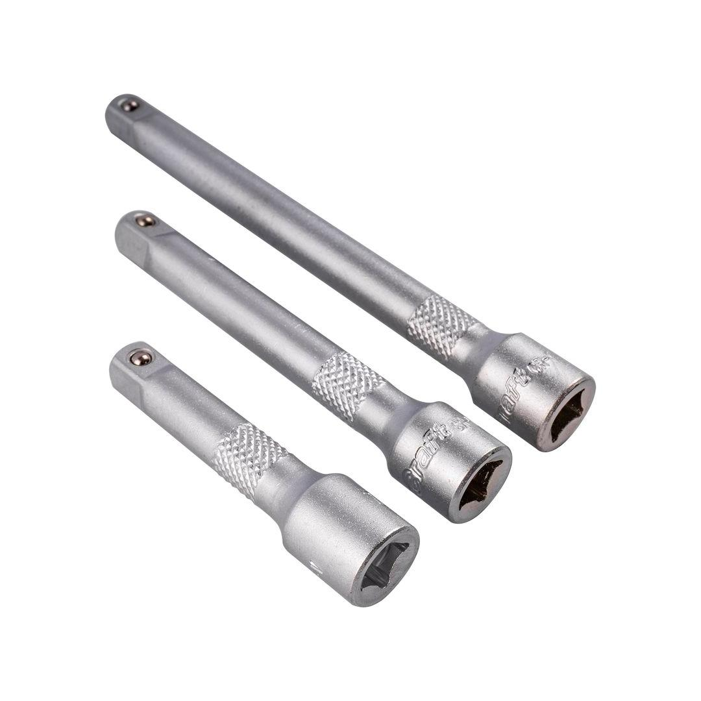
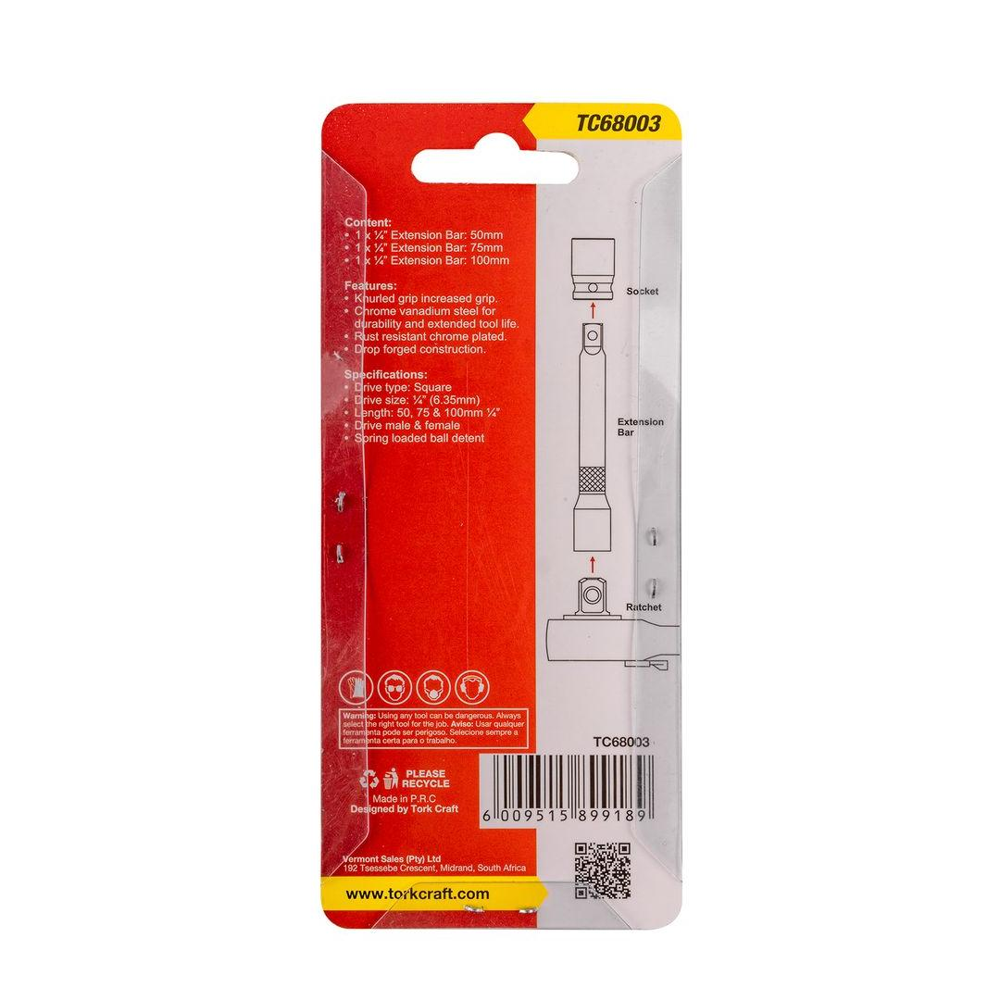

TC68003



Items: 50, 75, and 100mm
Expand your toolbox with the Tork Craft 3-piece 1/4" set, providing versatility and reach for various tasks. This set includes three bars of different lengths: 50mm, 75mm, and 100mm. These bars are designed to extend the reach of your socket wrench or ratchet, allowing you to access hard-to-reach nuts and bolts in tight spaces.